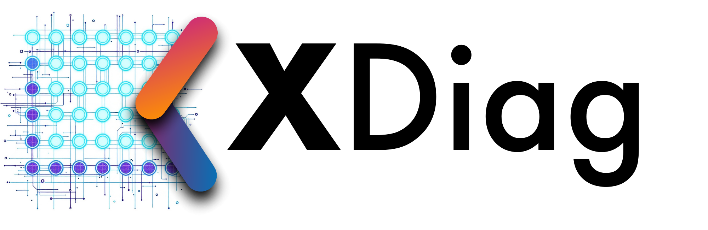
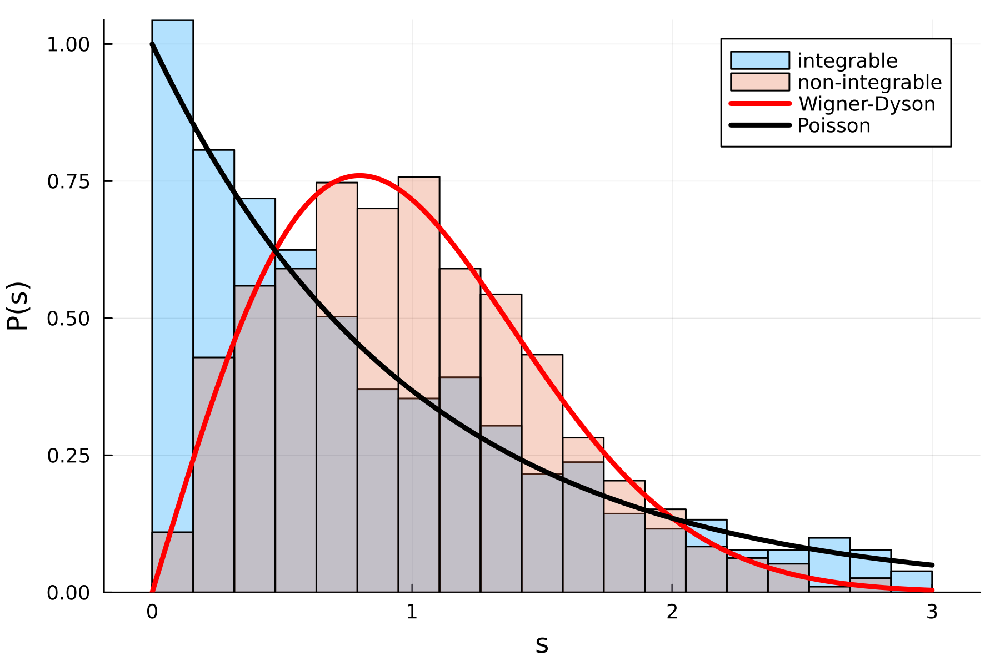
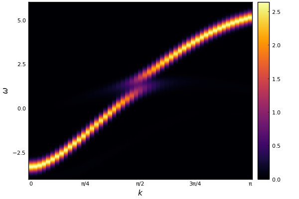

Home

| Languages | Code status | Version |
|---|---|---|
| v0.4.0 |
News
- Nov. 4, 2025 New release v0.4.0 introduces sparse matrix capabilities
- Jun. 17, 2025 New release v0.3.3 features additional parallelization in Julia, compatibility with Julia 1.12, and several practical enhancements
Overview
XDiag is a library for performing Exact Diagonalizations of quantum many-body systems. Key features include optimized combinatorical algorithms for navigating Hilbert spaces, iterative linear algebra algorithms, shared and distributed memory parallelization. It consist of two packages:
Citation
Our software paper in now available on the arXiv: XDiag software paper.
Please support our work by citing XDiag and the implemented algorithms if it is used in your published research.
@article{xdiag,
Author = {Alexander Wietek and Luke Staszewski and Martin Ulaga and Paul L. Ebert and Hannes Karlsson and Siddhartha Sarkar and Henry Shackleton and Aritra Sinha and Rafael D. Soares},
Title = {XDiag: Exact Diagonalization for quantum many-body systems},
Year = {2025},
journal = {arXiv preprints},
eprint = {arXiv:2505.02901},
archivePrefix = {arXiv},
primaryClass = {cond-mat.str-el}
}
If you are using the sublattice coding techniques or distributed memory parallelization, please also cite the following paper.
@article{Wietek2018,
title = {Sublattice coding algorithm and distributed memory parallelization for large-scale exact diagonalizations of quantum many-body systems},
author = {Wietek, Alexander and L\"auchli, Andreas M.},
journal = {Phys. Rev. E},
volume = {98},
issue = {3},
pages = {033309},
numpages = {10},
year = {2018},
month = {Sep},
publisher = {American Physical Society},
doi = {10.1103/PhysRevE.98.033309},
url = {https://link.aps.org/doi/10.1103/PhysRevE.98.033309}
}
Gallery

- 
- 